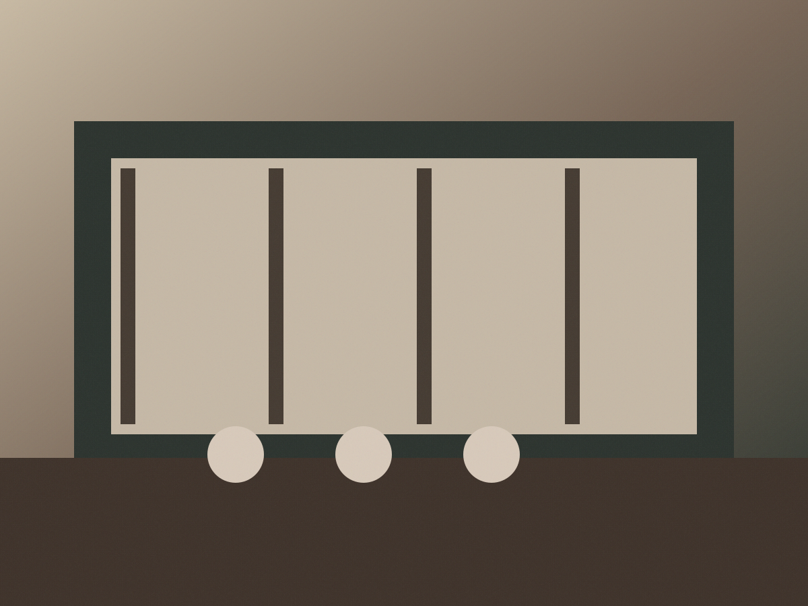

RV-43 + RV-46 · ExplorarEncontre um jeito
Encontre um jeito
de viver a serra.
Busca dominante, descoberta visual e contexto de viagem. Os filtros ajudam, mas não tomam a decisão por você.
RV-47 + RV-49
6 opções · demoPara esta viagem
Natureza
Vale das Araucárias
45–60 min · ao ar livre · sem custo

Gastronomia
Café Neblina Alta
30–50 min · pausa entre passeios

Cultura
Estação Cultural da Serra
60–90 min · indoor · evento hoje

Indoor
Ateliê Pedra & Folha
50–70 min · produção local

Natureza
Jardim das Nascentes
40 min · caminhada leve
Gastronomia
Casa do Vale
90 min · jantar · reserva sugerida